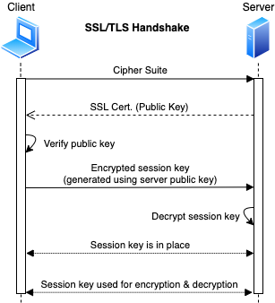
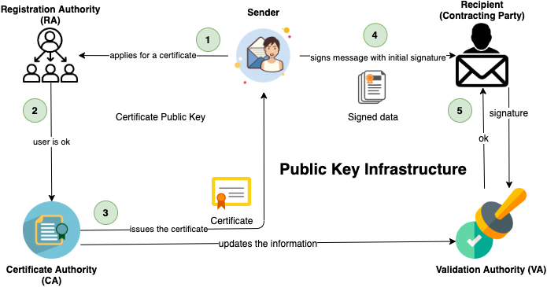

Encrypting communication
- Can happen in different layers on Internet protocol suite e.g.
-
- Link layer: • [PPP]
-
- Internet layer: • IPSec
-
- Transport layer: • TCP
-
- Application layer: • SSH • FTP, SFTP, FTPS • SSL / TLS
SSL/TLS
SSL (Secure Sockets Layer)
- Protocol on the application layer
- Created to ensure the security of the message transmission over the network and Internet.
- ❗ Not secure and has known vulnerabilities, use > TLS 1.2 instead.
- 📝 Uses both asymmetric and symmetric authentication mechanisms
- Asymmetric encryption is used to establish a secure session between a client and a server
- Utilizing RSA and digital certificates
- Symmetric encryption is used to exchange data within the secured session
- Encrypts data at Transport Layer of TCP/IP stack and above
TLS (Transport Layer Security)
- 📝 More secure successor of SSL
- Protocol to establish secure client-server connection.
- Ensures the information integrity and privacy during transmission.
- Uses RSA 1024 and 2048 bits
- ❗ Use at least TLS 1.2, lower version has vulnerabilities.
- Most commonly used implementation of SSL/TLS is OpenSSL library.
- Vulnerabilities include • Heartbleed (OpenSSL) • POODLE • CRIME and BREACH • Renegotiation attack • FREAK • DROWN
Two layers of TLS
- TLS Record Protocol
- Provides secured communication channel
- Private connection: using symmetric cryptography for data encryption
- Reliable connection: providing message integrity check
- TLS Handshake Protocol
- Providing connection security that has three basic properties:
- The peer's identity can be authenticated using asymmetric cryptography
- The negotiation of a shared secret is secure
- The negotiation is reliable
- TLS Handshake Protocol operates on top of TLS record layer
SSL/TLS Handshake

Securing FTP
Insecure FTP options
FTP (File Transfer Protocol)
- Used for the transfer of computer files between a client and server on a computer network.
- Runs on Application layer (4) in internet protocol suite
- Insecure as it has minimal security through user ID and passwords.
- Runs on port 21
TFTP (Trivial File Transfer Protocol)
- Less secure than FTP using no authentication at all
- Runs on port 69
Secure options
- Encrypting files before using FTP
- Does not protect user password, or prevent man in the middle from downloading encrypted files
- SFTP (SSH File Transfer Program) | port: 22
- Uses SSH for authentication and data transport mechanism
- FTP over SSH
- SSH connection must be established between the two systems before the FTP connection is established
- FTP over IPSec
- IPSec runs on lower layer Internet layer (3) on IP suite.
- Can cause high amount of CPU cycles on interrupt or kernel level.
- FTP over VPN
- FTP over TLS
- Also known as • FTPS • FTP-SSL (old name) • FTP Secure
- Comparison
| Method | Password Privacy | Server Verification | Data Privacy | Data Integrity | Test and Binary Transfers | Automatic |
|---|---|---|---|---|---|---|
| Separate encryption | No | No | Yes | Maybe | Maybe | No, file must be encrypted and decrypted separated from the transfer |
| SFTP | Yes | Yes, private key | Yes | Yes | Maybe | Yes |
| FTP over SSH | Yes | Yes, private key | Yes | Yes | Yes | No, separate setup of the tunnel is needed |
| FTP over IPSec | Yes | Yes, private key or certificate authority | Yes | Yes | Yes | Yes, but configuration can be a challenge |
| FTP over VPN | Yes | Maybe | Yes | Yes | Yes | Maybe, but may have configuration challenges |
| FTPS | Yes | Yes, private key or certificate authority | Yes | Yes | Yes | No, but it's easy to use |
Digital signatures
- Created using asymmetric cryptography
- Attached to the transmitted data
- 📝 Usually used in cases where it is important to detect forgery or tampering
- E.g. • software distribution • financial transactions • contract management software
- 📝 Provides cryptographic way of
- Authentication
- Verifies identity of the source messages
- Through a secret-key that's bound to a specific user
- Integrity
- Ensures the communication is not altered during transmission
- Avoids forging as any change would invalidate the signature
- Non-repudiation of origin
- The sender cannot falsely claim that they have not signed the message
- ❗ Risks
- Revoked secret key (key pair) prior to its usage
- Leaked secret keys that would continue to implicate the claimed owner of the key-pair
- 📝 Simplified flow
- Sender hashes the file and encrypts using sender's private key
- Provides non-repudiation since only the sender has access to their private key.
- However there's no confidentiality as it can be unencrypted by anyone with access to the sender's public key
- The hashing of the email is what creates the integrity.
- Recipient decrypts the message with its sender's public key
- Digital Signature Algorithm (DSA) is the standard used in generation and verification
Encryption vs Signing
- When encrypting:
- You use their public key to write a message
- They use their private key to read it
-
I want my public key to be used to read the messages and I do not care who reads them
- When signing:
- You use your private key to write message's signature
- They use your public key to check if it's really yours.
-
I only care that I am the only one who can generate these.
Digital signature flow

Public Key Infrastructure (PKI)
- Security architecture/structure for managing digital certificates
- 📝 Goal is secure electronic transfer of information for a range of network activities
- Provides confidentiality, integrity, access control, authentication, and non-repudiation of the sender.
- Includes hardware, software, people, policies, and procedures
- Goal is to increase the confidentiality of information that is being exchanged.
- Used widely e.g. by browser, operating systems for system updates...
- Cross-Certification
- Allowing a CA to trust another CS in a completely different PKI
- Allowing both CAs to validate certificates from either side
- Single-authority system
- CA at the top that creates and issues certificates
- Hierarchical trust system
- CA at the top (root CA)
- Making use of one or more RAs (subordinate CAs) underneath it to issue and manage certificates
Key escrow
- Also known as fair cryptosystem
- Allows a third party to access sensitive data if the need arises.
- A copy of a private key is stored to provide third-party access and to e.g.
- facilitate recovery operations
- comply with a court order
Actors of PKI
- Validation authority (VA)
- 📝 Used to validate certificates, stores certificates with their public keys
- Certificate authority (CA)
- Also known as certification authority
- 📝 Third party to issue and verify digital certificates
- Digital certificates contain public key and the identity of the owner.
- E.g. Comodo, IdentTrust, GoDaddy
- Registration authority (RA)
- 📝 Acts as verifier for the certificate authority
- Certificate Management System
- Generates, distributes, stores, and verifies certificates
- End user
- Requests, manages, and uses certificates
PKI process flow
- A user applies for a certificate with his public key at a Registration Authority (RA)
- Registration Authority (RA) confirms the user's identity to Certificate Authority (CA) which in turn issues the certificate and informs Validation Authority (VA)
- The user can then digitally sign a contract using his new certificate.
- His identity is then checked by the contracting party with a Validation Authority (VA) which again receives information about issued certificates by the Certificate Authority (CA).

Digital certificate
- Electronic file
- Used to verify a user's identity (= non-repudiation)
X.509
- Standard protocol used for digital certificates, public key encryption
- Defining all sorts of things regarding PKI including digital certificates
- Identifies components of a digital certificate: • version • algorithm ID • copy of the public key • key usage description
Digital certificate vs digital signature
- The certificate ties the digital signature to a data object.
- Digital signature secures the data in transit.
- Digital certificate uses the public key to identify source of the data.
- the digital signature uses the public key to verify integrity of the data.
- ❗ Signatures do not help with revoked keys and stolen keys
- CA maintains certificate revocation list
- Certificates helps to prove senders authenticity of public keys (e.g. who signed what)
- Sender obtains digital certificate by registering his public key to a certificate authority.
- CA uses its private key to sign senders certificate and attaches CA public key to his certificate.
- Receiver decrypts and validates signature using certificate authority's public key.
Certificate types
- Signed certificate
- Issued by Certification Authorities (CA)
- Contains a public key and the owner's identity.
- Self-signed certificate
- Issued and signed by oneself (not CA)
- ❗ Not to be trusted
- Used for testing/development purposes
- Otherwise better to use let's encrypt that offers free SSL/TLS certificates
PGP (Pretty Good Privacy)
- Encryption program
- Protocol for
- secure communication through encryption and decryption
- authentication (ensures users are who they claim to be)
- Uses a serial combination of
- hashing
- data compression
- symmetric-key cryptography
- public-key cryptography
- Main uses include
- Sending and receiving encrypted emails.
- Verifying the identity of the person who has sent you this message
- Encrypting files
- Available as both open-source and commercial software
Web of trust
- Used by PGP
- Decentralized model
- Individual users sign keys that belong to other people
- Validates that key are who they say they are
PGP encryption and decryption workflow

PGP tools
GNU Privacy Guard
- Also known as GnuPG or GPG
- Open-source and free implementation of PGP
- Allows to encrypt and data and communications
- E.g. create key pair
gpg --gen-key - E.g. for symmetric encryption only
gpg -c <file-name>to encryptgpg <file-name>to decrypt
PGP Alternatives
PEM (Privacy-Enhanced Mail)
- Proposed IETF standard for secure email, obsoleted by PGP.
- Depended on a single root certificate for its public key infrastructure (PKI)
- Was impractical and had its own problematic implications for security.
S/MIME
- Secure/Multipurpose Internet Mail Extensions
- Standard for encrypting and authenticating MIME data
- Used primarily for Internet e-mail.
- PGP is an application, whereas S/MIME is a protocol.
- PGP can be used to encrypt not only e-mail messages but also files and entire drives.